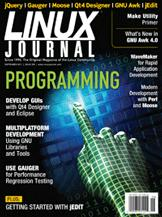

Shutdown Archive web server
Search:
Linux Journal
Issue #209/September 2011

Features
Multiplatform GNU Development
by Nathanael Anderson
Making a guitar synth work with
Rock Band
using GNU libraries and tools.
Performance Regression Monitoring with Gauger
by Bart Polot and Christian Grothoff
How to use Gauger and guidelines for what a suitable development environment for Gauger's deployment should look like.
man make: a Primer on the Make Utility
by Adrian Hannah
Ever wonder what that Makefile in your project folder does? Here's a look at the basics of Makefiles and how to manipulate them.
Qt4 Designer and Eclipse
by PJ Radcliffe
Develop GUIs quickly and easily.
Indepth
GNU Awk 4.0: Teaching an Old Bird Some New Tricks
by Arnold Robbins
What's new with version 4.
WaveMaker: It's Like...RAD!
by Don Emmack
WaveMaker—it's a tsunami of change for rapid application development.
jEdit: a Text Editor and More
by Adrian Klaver
An intro to this cross-platform text editor.
Moose
by Henry Van Styn
Moose is essentially a language extension for Perl 5 that provides a modern, elegant, fully featured object system.
Columns
Reuven M. Lerner's At the Forge
CoffeeScript and jQuery
Dave Taylor's Work the Shell
Calculating Day of the Week, Finally
Kyle Rankin's Hack and /
Remotely Wipe a Server
Kyle Rankin and Bill Childers' Tales from the Server Room
Unboxing Day
Doc Searls' EOF
GandhiCon 4.x
In Every Issue
Current_Issue.tar.gz
Letters
upFRONT
New Products
New Projects
Archive Index
Shutdown Archive web server
Search:
Copyright © 1994 - 2018
Linux Journal
. All rights reserved.